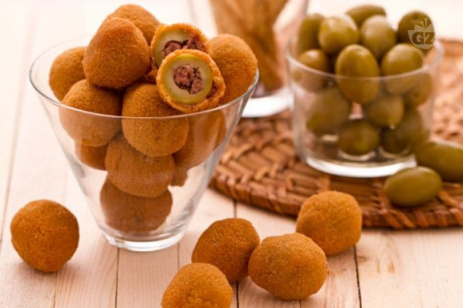

Ascoli olives recipe
Ascoli olives

Description
Ascoli olives are a speciality of central Italy, well worth tasting at least once in a lifetime. They consist in little meatballs of fresh and cured meat wrapped in the flesh of green olives before being coated with breadcrumbs and fried. The result is a delicious finger food appetizer, as well as being this region’s most renowned street food.
The trickiest part of this recipe is the method used to remove the olive stones, so it is advisable to select a soft variety of green olives, making it easier to detach the flesh from the stone. As well as being an excellent recipe for serving with an aperitif they also make an ideal snack when spending an evening watching soccer on the TV.
Ingredients
- 30 green olives
- 350g mixed meat
- parma ham
- mortadella
- parmesan
- 30g bread with the crusts removed
- 4 eggs
- 9 spoonfuls of E.V.O. oil
Steps
- Start to prepare the olives which have to be pitted by removing the flesh with a single spiral cut starting from the stalk
- Put the spirals of olive flesh in salted cold water to keep them firm
- Chop the onion, carrot and celery and gently fry in a pan with a little oil, then add the meat previously chopped into pieces that are not too small and gently fry it with the tomato purée
- Remove it from the heat and let it cool to a lukewarm temperature before popping it into the mixer together with the mortadella and raw ham
- Add the parsley, 2 of the 4 eggs, parmesan cheese, the bread previously soaked in water and squeezed well, then – most important – the nutmeg
- Mould the mixture with your hands into olive shaped balls; wrap the flesh of one green olive around each little ball
- Dust each ball with flour and then dunk it in whisked egg mixture (using the other two eggs), before finally coating with breadcrumbs
- Fry the olives in boiling olive oil – a few at a time to avoid reducing the oil temperature – until they are all nice and golden
- Stand them on absorbent kitchen paper to dry and serve them hot